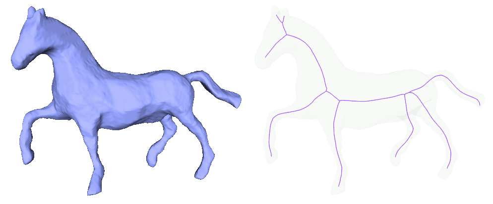
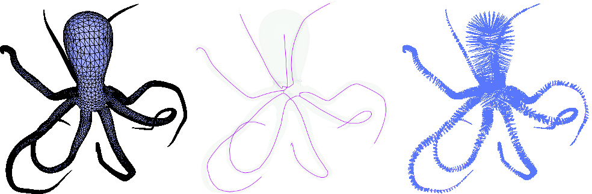
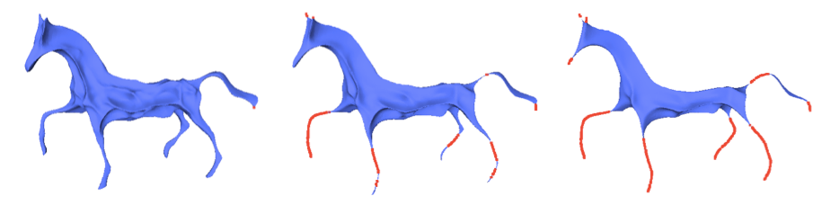
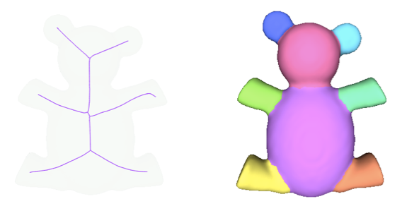
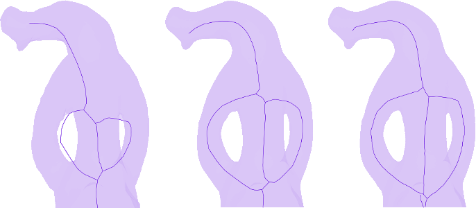

- Author
- Xiang Gao, Sébastien Loriot and Andrea Tagliasacchi
Introduction

Skeletons are effective shape abstractions used in segmentation, shape matching, reconstruction, virtual navigation, etc. As the name implies, a curve skeleton is a graph of curvilinear structures (1D). It is not a medial axis that for a 3D geometry is composed of surfaces (2D). As illustrated in Figure 68.1, the curve skeleton of a shape captures its essential topology. In this package, we implement the Mean Curvature Skeleton algorithm described in [1] that extracts a curve skeleton from a triangulated surface mesh without borders by iteratively contracting the input triangulated surface mesh.
User Interface Description
Input and Output
The input is a triangulated surface mesh, model of the FaceListGraph concept (CGAL::Surface_mesh, CGAL::Polyhedron_3, ...) that has no boundary and that has only one connected component. The skeleton is provided as a graph of type boost::adjacency_list. Each vertex of the skeleton is associated to a 3D location point and to the set of input vertices that contracted to that skeleton vertex. Note that due to the construction process of the skeleton, a skeleton vertex might have no corresponding input vertex.
This package needs a sparse linear solver and we recommend the use of Eigen 3.2 or later.
The input and output are illustrated in Figure 68.2.

Free Function
If a CGAL model of the FaceListGraph concept such as CGAL::Surface_mesh or CGAL::Polyhedron_3 is used as triangulated input surface mesh, Eigen 3.2 or later is available and CGAL_EIGEN3_ENABLED is defined, the function CGAL::extract_mean_curvature_flow_skeleton() can be used to extract a mean curvature flow skeleton from the input surface mesh using the default parameters, which work well in most cases.
The following example shows how to extract a skeleton out of a triangulated surface mesh and how to access the point of each skeleton vertex and the set of input vertices associated.
File Surface_mesh_skeletonization/simple_mcfskel_example.cpp
#include <CGAL/Simple_cartesian.h>
#include <CGAL/Polyhedron_3.h>
#include <CGAL/extract_mean_curvature_flow_skeleton.h>
#include <CGAL/boost/graph/split_graph_into_polylines.h>
#include <fstream>
#include <boost/foreach.hpp>
typedef boost::graph_traits<Polyhedron>::vertex_descriptor vertex_descriptor;
typedef Skeletonization::Skeleton Skeleton;
typedef Skeleton::vertex_descriptor Skeleton_vertex;
typedef Skeleton::edge_descriptor Skeleton_edge;
struct Display_polylines{
const Skeleton& skeleton;
std::ofstream& out;
int polyline_size;
std::stringstream sstr;
Display_polylines(const Skeleton& skeleton, std::ofstream& out)
: skeleton(skeleton), out(out)
{}
void start_new_polyline(){
polyline_size=0;
sstr.str("");
sstr.clear();
}
void add_node(Skeleton_vertex v){
++polyline_size;
sstr << " " << skeleton[v].point;
}
void end_polyline()
{
out << polyline_size << sstr.str() << "\n";
}
};
int main(int argc, char* argv[])
{
std::ifstream input((argc>1)?argv[1]:"data/elephant.off");
Polyhedron tmesh;
input >> tmesh;
{
std::cout << "Input geometry is not triangulated." << std::endl;
return EXIT_FAILURE;
}
Skeleton skeleton;
std::cout << "Number of vertices of the skeleton: " << boost::num_vertices(skeleton) << "\n";
std::cout << "Number of edges of the skeleton: " << boost::num_edges(skeleton) << "\n";
std::ofstream output("skel-poly.cgal");
Display_polylines display(skeleton,output);
output.close();
output.open("correspondance-poly.cgal");
BOOST_FOREACH(Skeleton_vertex v, vertices(skeleton))
BOOST_FOREACH(vertex_descriptor vd, skeleton[v].vertices)
output << "2 " << skeleton[v].point << " "
<< get(CGAL::vertex_point, tmesh, vd) << "\n";
return EXIT_SUCCESS;
}
Advanced Usage with the Function Object
The class CGAL::Mean_curvature_flow_skeletonization enables the usage of low level functions such as contract_geometry() and collapse_edges(). The class further enables to change the parameters of the algorithm, for example by calling set_is_medially_centered(). The class gives the user full control over each step of the algorithm as well as the intermediate contracted mesh (called meso-skeleton) as illustrated by Figure 68.3.

In this example, we show how to use the API of the class CGAL::Mean_curvature_flow_skeletonization.
File Surface_mesh_skeletonization/MCF_Skeleton_sm_example.cpp
#include <CGAL/Simple_cartesian.h>
#include <CGAL/Surface_mesh.h>
#include <CGAL/Mean_curvature_flow_skeletonization.h>
#include <fstream>
typedef boost::graph_traits<Triangle_mesh>::vertex_descriptor vertex_descriptor;
typedef Skeletonization::Skeleton Skeleton;
typedef Skeleton::vertex_descriptor Skeleton_vertex;
typedef Skeleton::edge_descriptor Skeleton_edge;
int main(int argc, char* argv[])
{
std::ifstream input((argc>1)?argv[1]:"data/elephant.off");
Triangle_mesh tmesh;
input >> tmesh;
{
std::cout << "Input geometry is not triangulated." << std::endl;
return EXIT_FAILURE;
}
Skeleton skeleton;
Skeletonization mcs(tmesh);
mcs.contract_geometry();
mcs.collapse_edges();
mcs.split_faces();
mcs.detect_degeneracies();
mcs.contract();
mcs.contract_until_convergence();
mcs.convert_to_skeleton(skeleton);
std::cout << "Number of vertices of the skeleton: " << boost::num_vertices(skeleton) << "\n";
std::cout << "Number of edges of the skeleton: " << boost::num_edges(skeleton) << "\n";
std::ofstream output("skel-sm.cgal");
BOOST_FOREACH(Skeleton_edge e, edges(skeleton))
{
const Point& s = skeleton[source(e, skeleton)].point;
const Point& t = skeleton[target(e, skeleton)].point;
output << "2 "<< s << " " << t << "\n";
}
output.close();
output.open("correspondance-sm.cgal");
BOOST_FOREACH(Skeleton_vertex v, vertices(skeleton))
BOOST_FOREACH(vertex_descriptor vd, skeleton[v].vertices)
output << "2 " << skeleton[v].point << " " << get(CGAL::vertex_point, tmesh, vd) << "\n";
return EXIT_SUCCESS;
}
Segmentation through Skeletonization
As a proof of concept, we show how to use the skeleton and the association of input vertices to skeleton to compute a segmentation of the input triangulated surface mesh using the package Triangulated Surface Mesh Segmentation. The segmentation algorithm consists in computing a shape diameter function for each face of the input mesh, followed by solving a graph cut problem. Here we use the skeleton to define a new shape diameter function. Specifically, for each face we compute the diameter value as the average distance between its three incident vertices and their corresponding skeletal point. The result of this segmentation is shown in Figure 68.4.

File Surface_mesh_skeletonization/segmentation_example.cpp
#include <CGAL/Polyhedron_3.h>
#include <CGAL/Polyhedron_items_with_id_3.h>
#include <CGAL/Simple_cartesian.h>
#include <CGAL/extract_mean_curvature_flow_skeleton.h>
#include <CGAL/mesh_segmentation.h>
#include <fstream>
typedef boost::graph_traits<Polyhedron>::vertex_descriptor vertex_descriptor;
typedef boost::graph_traits<Polyhedron>::halfedge_descriptor halfedge_descriptor;
typedef boost::graph_traits<Polyhedron>::face_descriptor face_descriptor;
typedef Skeletonization::Skeleton Skeleton;
typedef Skeleton::vertex_descriptor Skeleton_vertex;
template<class ValueType>
struct Facet_with_id_pmap
: public boost::put_get_helper<ValueType&,
Facet_with_id_pmap<ValueType> >
{
typedef face_descriptor key_type;
typedef ValueType value_type;
typedef value_type& reference;
typedef boost::lvalue_property_map_tag category;
Facet_with_id_pmap(
std::vector<ValueType>& internal_vector
) : internal_vector(internal_vector) { }
reference operator[](key_type key) const
{ return internal_vector[key->id()]; }
private:
std::vector<ValueType>& internal_vector;
};
int main(int argc, char* argv[])
{
std::ifstream input((argc>1)?argv[1]:"data/161.off");
Polyhedron tmesh;
input >> tmesh;
{
std::cout << "Input geometry is not triangulated." << std::endl;
return EXIT_FAILURE;
}
Skeleton skeleton;
std::vector<double> distances(num_vertices(tmesh));
BOOST_FOREACH(Skeleton_vertex v, vertices(skeleton) )
{
const Point& skel_pt = skeleton[v].point;
BOOST_FOREACH(vertex_descriptor mesh_v, skeleton[v].vertices)
{
const Point& mesh_pt = mesh_v->point();
}
}
std::vector<double>
sdf_values( num_faces(tmesh) );
Facet_with_id_pmap<double> sdf_property_map(
sdf_values);
BOOST_FOREACH(face_descriptor f, faces(tmesh))
{
double dist = 0;
dist+=distances[target(hd, tmesh)->id()];
sdf_property_map[f] = dist / 3.;
}
std::vector<std::size_t> segment_ids( num_faces(tmesh) );
Facet_with_id_pmap<std::size_t> segment_property_map(segment_ids);
std::cout << "Number of segments: "
return EXIT_SUCCESS;
}
Performance
The elephant model is used to illustrate the performance of the mean curvature flow skeletonization procedure. Different resolutions of the model obtained by loop subdivision are used.
As can be seen on Figure 68.5, the more sampled the surface is, the better the skeleton is inside the model.

Runtime in milliseconds of extract_mean_curvature_flow_skeleton() using Polyhedron_3<Simple_cartesian<double> > as input data structure. The runtimes are similar if Surface_mesh<Simple_cartesian<double>::Point_3> is used instead. The solver used is the default one when Eigen is available. The code was compiled using CGAL 4.7 with g++ 4.8.4 with -O3 -DNDEBUG as compiling flags and was run on a Intel(R) Core(TM) i7-2820QM CPU @ 2.30GHz
Number of loop subdivision of elephant.off | Number of vertices | Runtime in s |
| 0 | 2,775 | 0.46 |
| 1 | 11,112 | 1.26 |
| 2 | 44,460 | 5.64 |
| 3 | 177,852 | 26.26 |
Design and Implementation History
The initial implementation of this package is the result of the work of Xiang Gao during the 2013 season of the Google Summer of Code mentored by Andrea Tagliasacchi and Sébastien Loriot. It was finalized by Andreas Fabri and Sébastien Loriot.


 1.8.13
1.8.13